Friday, September 4, 2026 · seven pieces · one visual world
A day of posts for THE FUTURE NEEDS FORM., two live working intensives on October 9 and 10. form. sells; Dontae shows the work. Two posts from form., two collab posts that land on both feeds, three from Dontae's page. Every image is final. The copy is what will be posted, word for word.
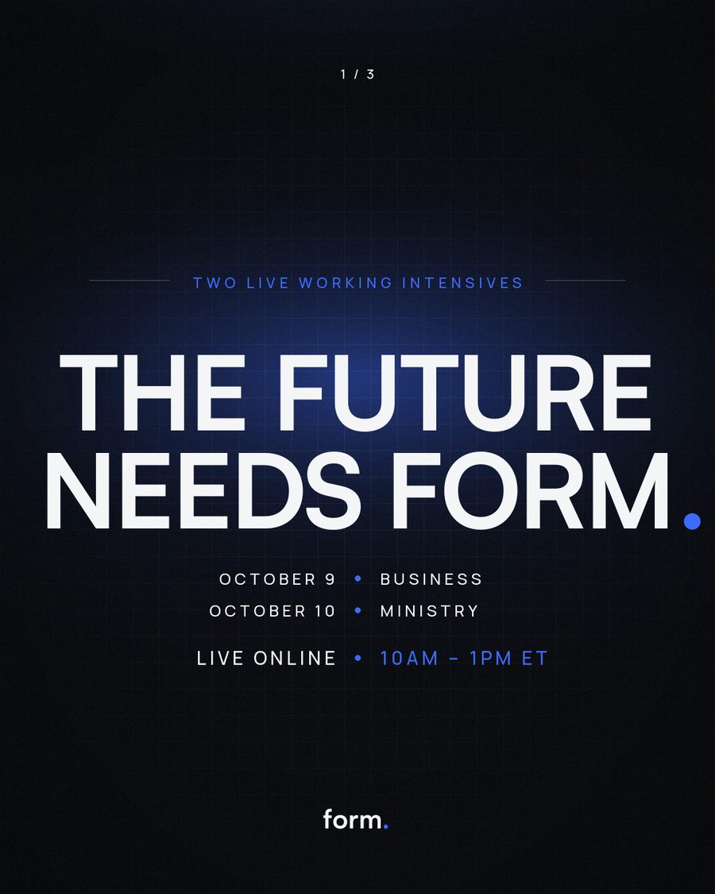
You're reviewing this.
Read it the way a stranger on their phone would. Under each piece there is one question for you. Answer those first, then anything else. There is a feedback box under every piece. Type your name once and it stays. Notes about the drop as a whole can go in any box; just start them with the word overall.
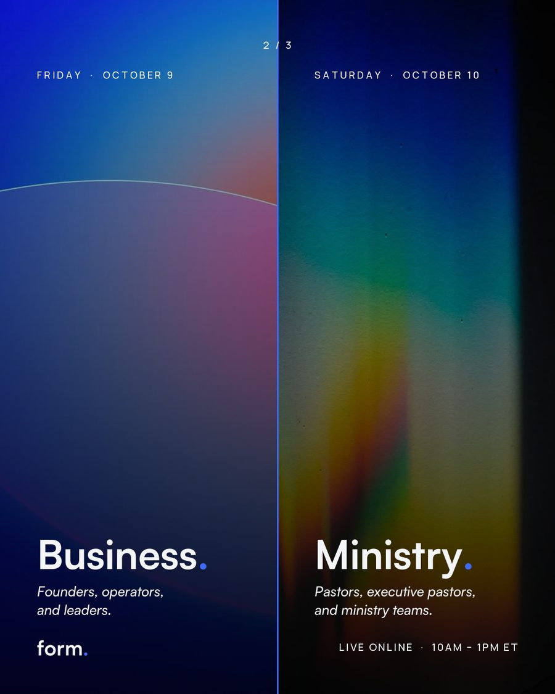
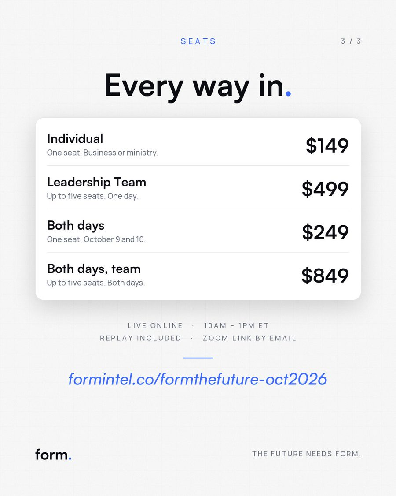
Most organizations will spend the next two years adding AI to a structure that was never designed to hold it. They'll automate the meeting that should have been cancelled, buy the tool nobody asked for, and call it transformation. Then the same three people will still be carrying everything, only faster. THE FUTURE NEEDS FORM. is two live working intensives for the people responsible for how an organization actually works. Friday, October 9 — Business. Founders, operators, and leadership teams. Saturday, October 10 — Ministry. Pastors, executive pastors, and ministry teams. Three hours, live online. One question, asked properly: what organization should you build now that AI exists. What should stop. What should stay human. What should be redesigned before anyone automates it. You leave with decisions, not a list of tools. If you lead people and you're tired of buying software that changes nothing, this is your room. Individual $149. Leadership team, up to five, $499. Both days $249, or $849 for the team. Replay included. formintel.co/formthefuture-oct2026 — link in bio.
Seats and details: https://formintel.co/formthefuture-oct2026
Does the first slide stop you before you read a word, and is the price slide clear enough to buy from?
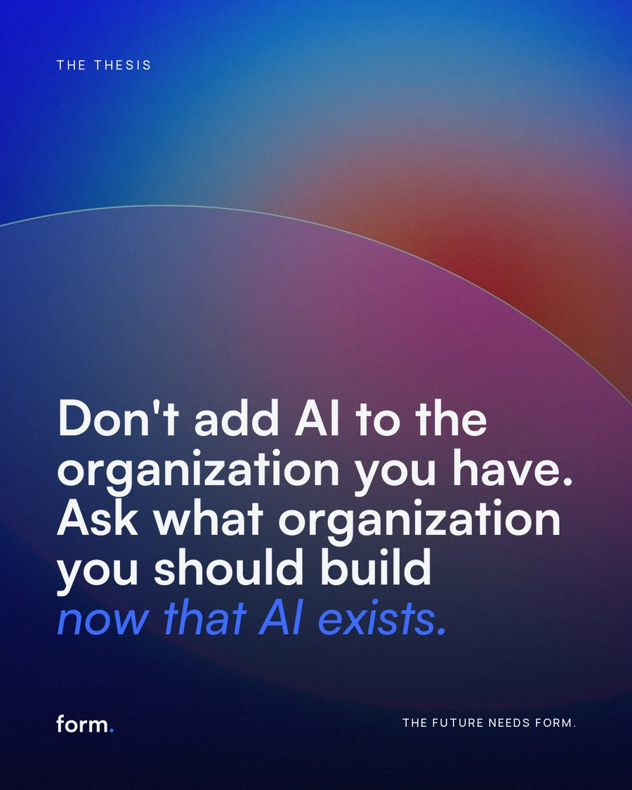
Your AI strategy is probably a mistake. Not because AI is. Because "add AI" is the wrong sentence. It bolts new capability onto an organization designed for a world that no longer exists, and then everyone wonders why nothing changed except the invoice. In plain terms: the tool was never the problem. The shape of the organization is. The better sentence is harder. Don't add AI to the organization you have. Ask what organization you should build now that AI exists. That question is the whole intensive. Business on October 9. Ministry on October 10. Live online, 10am–1pm ET. formintel.co/formthefuture-oct2026
https://formintel.co/formthefuture-oct2026
Read the caption once. Could you say back what the intensive is about in one sentence?
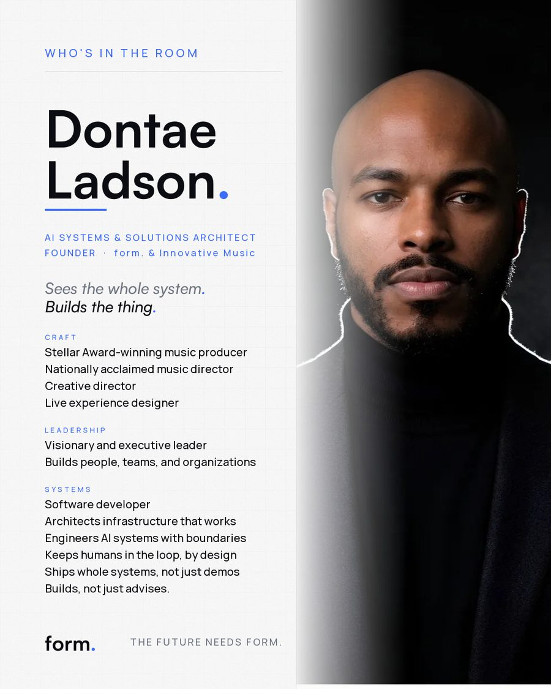
The person teaching you to rebuild your organization around AI should have built one. Dontae Ladson is an AI Systems & Solutions Architect and the founder of form. and Innovative Music. He is building form. | HQ, an operating system where people and AI employees work together with authority, memory, and accountability designed in. Infrastructure, not automations. Before that: a Stellar Award-winning music producer and nationally acclaimed music director. A creative director and live experience designer. An executive pastor who learned that you cannot optimize your way out of a trust problem. Different rooms. The same instinct in every one of them: see the whole system, then build the thing that actually works. If you're going to trust someone with how your organization works, it should be someone who has carried one. THE FUTURE NEEDS FORM. October 9 for business. October 10 for ministry. formintel.co/formthefuture-oct2026
https://formintel.co/formthefuture-oct2026
Would you trust this person with how your organization works, from this card alone?
This is a video. You film it on your phone today, talking to the camera. It is not a carousel. The six dark frames are the editor's reference for the on-screen text; they are not slides to post. The only image you upload is the cover.
Read the six beats once. Don't memorize them; know the shape.
Set the phone up (Camera and Light below). Record five seconds of silence, then take 1 clean, take 2 a little faster, take 3 the first beat three ways.
Edit in CapCut or Instagram's own editor (Edit below): one cut per beat, captions on, one on-screen line per beat from the storyboard.
Upload from the form. Instagram account as a Reel. Cover: c2-reel-cover.jpg. Tag people → Invite collaborator → Dontae. Caption and first comment from this sheet.
Cross-post the same file to form. Facebook and the form. LinkedIn page. Post it on TikTok from Dontae's account with the TikTok caption.
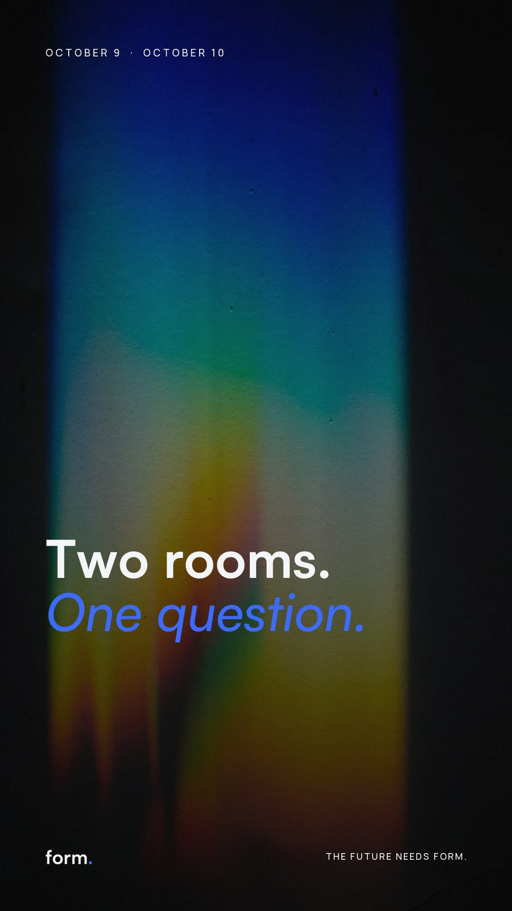
In October I'm running two rooms. A Friday for business leaders. A Saturday for pastors and ministry teams. I've led in both. I was an executive pastor before I was an architect. And the failures I saw in each were the same failure. Too much depending on too few people. No shared architecture. And a new tool showing up every quarter to fix a problem nobody had actually named. So the question in each room is not what AI can do. It's what organization you should build now that AI exists. What should stop. What should stay human. What should be redesigned before anyone automates it. Different vocabulary in each room. Same architecture underneath. Both rooms are open now. The link to grab your seat is in the bio.
| Time | You say | On screen | Frame and performance | B-roll |
|---|---|---|---|---|
| 0:00 – 0:06 | In October I'm running two rooms. A Friday for business leaders. A Saturday for pastors and ministry teams. | Two rooms. October. | Medium close-up, chest up, eyes on the upper-third line, straight into the lens. No cutaway. This is the stop. | None. Hold on you. |
| 0:06 – 0:20 | I've led in both. I was an executive pastor before I was an architect. And the failures I saw in each were the same failure. Too much depending on too few people. No shared architecture. And a new tool showing up every quarter to fix a problem nobody had actually named. | Same failure. Both rooms. | Same frame. Let the pause after 'the same failure' sit for a full beat; that is the edit point. | Optional 3 seconds at 0:12: the HQ org chart on your screen, slow push. Check it for anything private first. |
| 0:20 – 0:33 | So the question in each room is not what AI can do. It's what organization you should build now that AI exists. | Not what AI can do. What should you build. | Lean in slightly on 'not what AI can do'. Second on-screen line lands on 'build'. | None. |
| 0:33 – 0:42 | What should stop. What should stay human. What should be redesigned before anyone automates it. | Stop. Stay human. Redesign first. | Three short sentences, three small nods. Cut on each period if the takes allow. | Optional: a notebook or whiteboard with the three words, handheld, 2 seconds each. |
| 0:42 – 0:48 | Different vocabulary in each room. Same architecture underneath. | Same architecture underneath. | Pull back a half step or cut to the faster take. This is the land. | None. |
| 0:48 – 0:54 | Both rooms are open now. The link to grab your seat is in the bio. | Seats are open. Link in bio. | Small smile, no pitch energy. Hold two seconds after the last word for the end card. | End card: the cover frame for 2 seconds. |
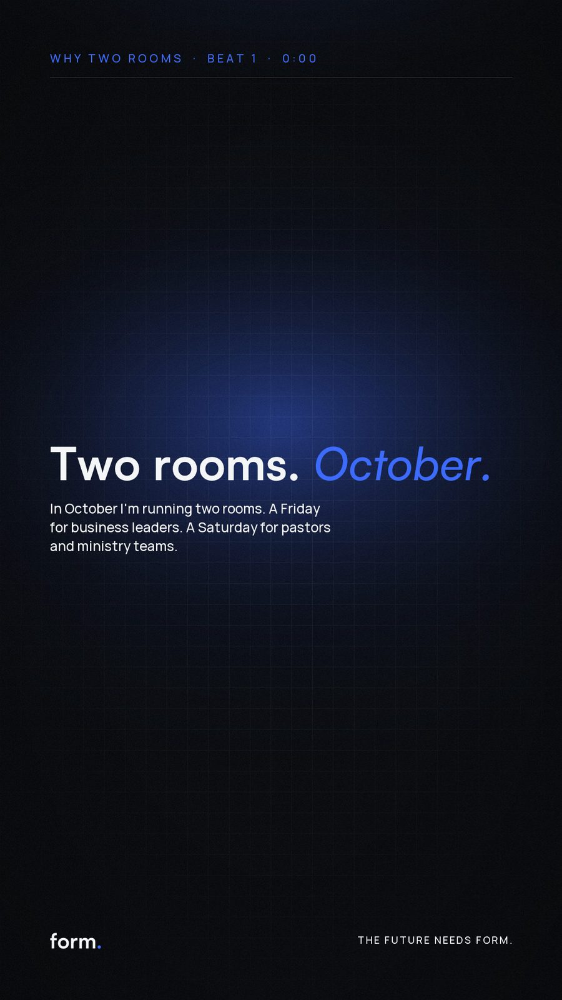
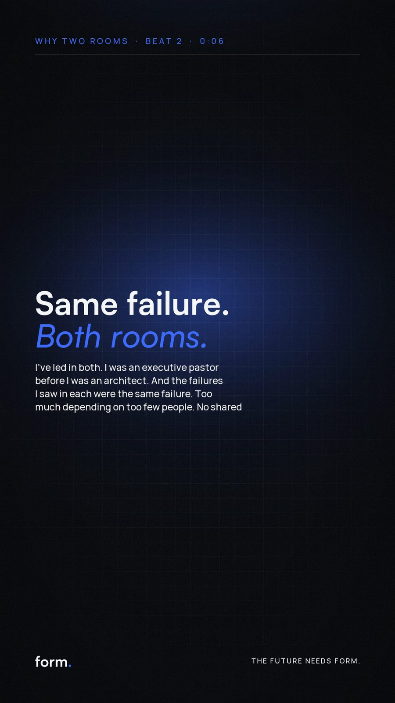
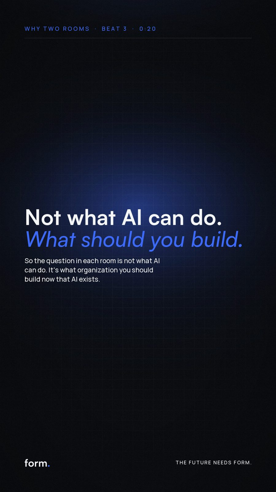
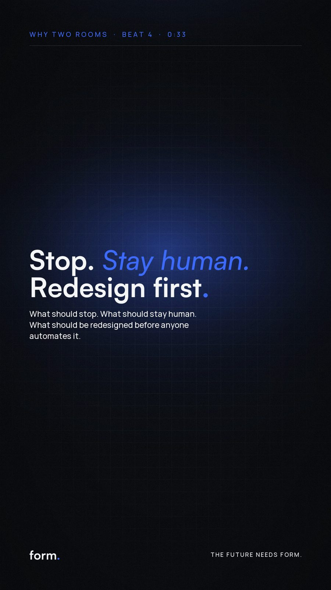
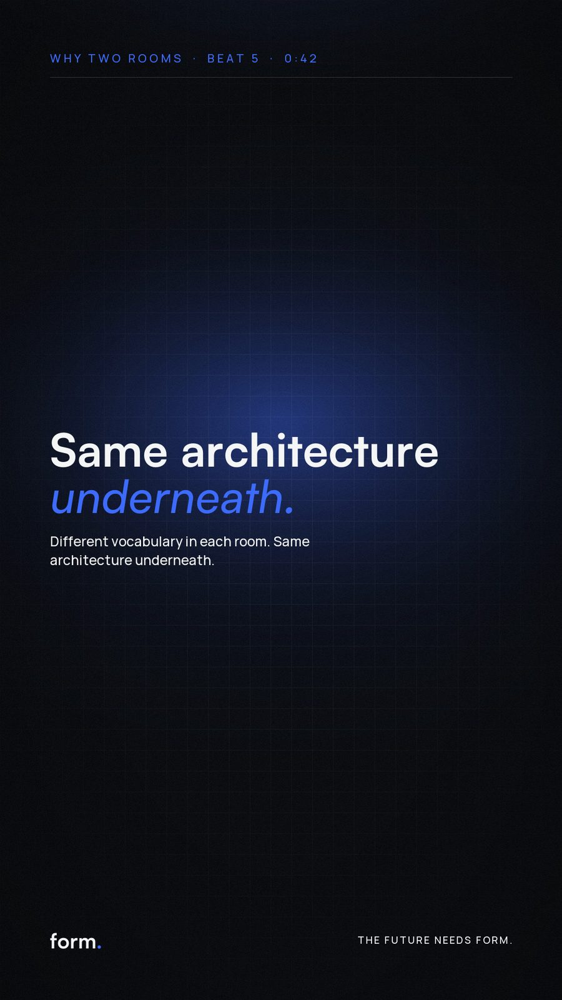
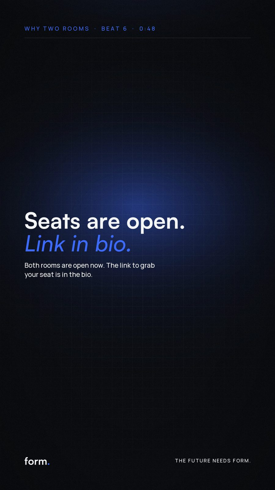
Most leaders are asking AI the wrong question. In October, two rooms to ask the right one. Friday, October 9 for business leaders. Saturday, October 10 for pastors and ministry teams. Live online, 10am–1pm ET, replay included. Both rooms are open now. Grab your seat at the link in bio: formintel.co/formthefuture-oct2026
Two rooms in October. Business on the ninth, ministry on the tenth. If you lead people, this is for you. Seats are open at formintel.co.
https://formintel.co/formthefuture-oct2026
Is the script something Dontae would say out loud, and is the last line a clear ask?
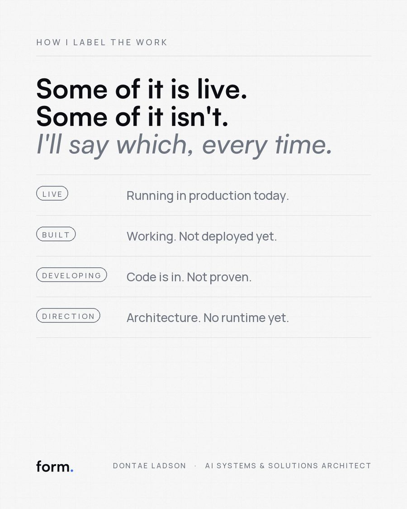
Most of what you see about AI online is a demo pretending to be a product. I've built a few of those. They're fun for a week. Then someone's business depends on them and the questions change. Who gave it permission. What does it remember. What did it cost. Who can prove what it did. So for the next seventy-five days, every weekday, I'm going to post what I'm actually building and label it honestly. form. | HQ, an operating system where people and AI employees work together under real authority. A lead generator that has to stay honest when it has no API keys. A gate named Allen that boots a repository and tells me what's real. And the two-day intensive whose funnel I built myself, so you'll see that break too. Some of it is live. Some of it is built and not deployed. Some of it is a direction I haven't earned yet. I'll say which, every time. If you run a team and you're being sold AI every week, this is the feed that shows you what it actually takes. Follow along.
Does the caption feel like a person talking, or like a company? Be blunt.
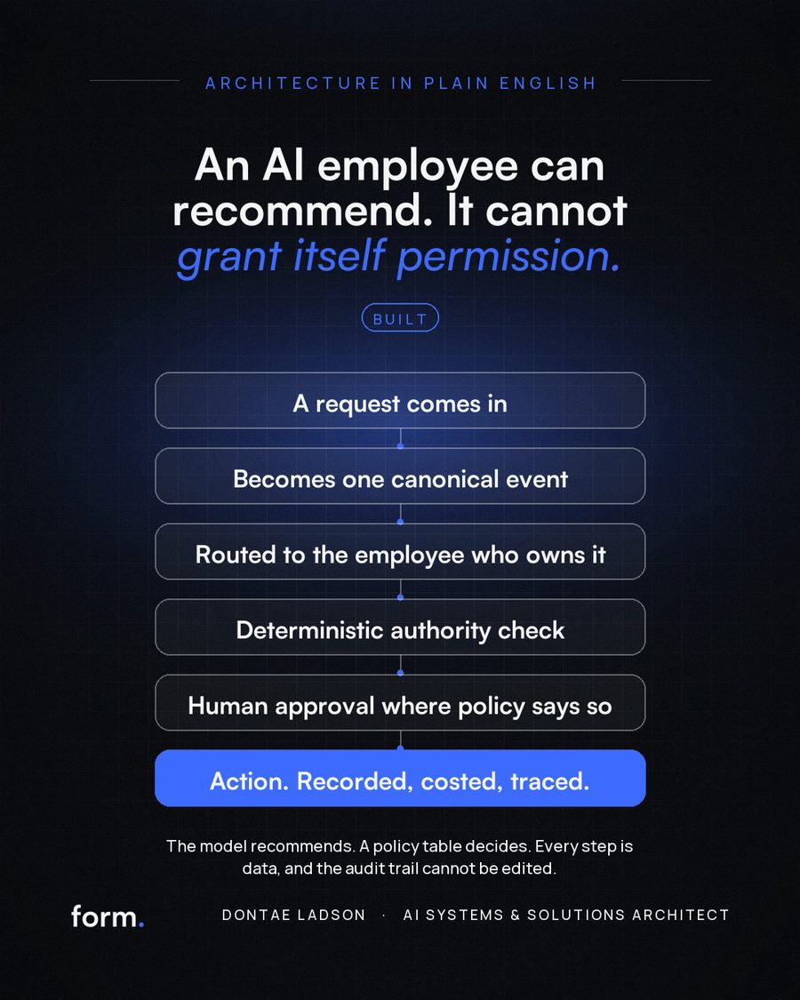
The dangerous AI systems aren't the smart ones. They're the ones that can grant themselves permission. Here is the most important line in form. | HQ, in plain English. An AI employee can recommend an action. It cannot grant itself permission to take it. Every meaningful action walks the same path. A request arrives, from a person, from Slack, from another employee. It becomes one standard record, the same shape every time, so nothing downstream has to guess. That record is routed to the employee who owns the work. The employee thinks, with its own context, memory, skills, and tools. Then, before anything touches the world, the action meets a deterministic authority check and, where policy requires it, a human approval gate. Whatever happens next is recorded, costed, and traced. Deterministic means no model is involved in that decision. It is data: who may do what, with what, until when. Why this matters if you run an organization: the moment an AI can act without a rule you wrote, you no longer run it. That one boundary is the difference between an assistant and an employee you can hold accountable. This part is built. The approval desk is in the console today.
Does the diagram make sense to someone who has never built software?
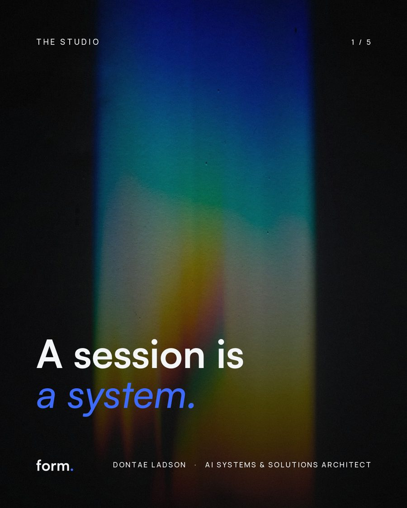
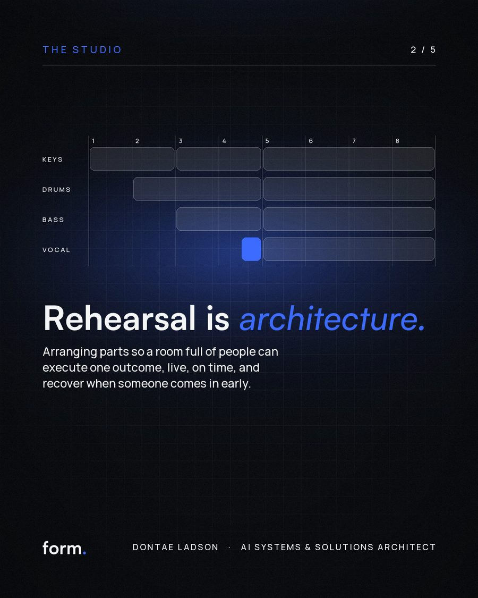
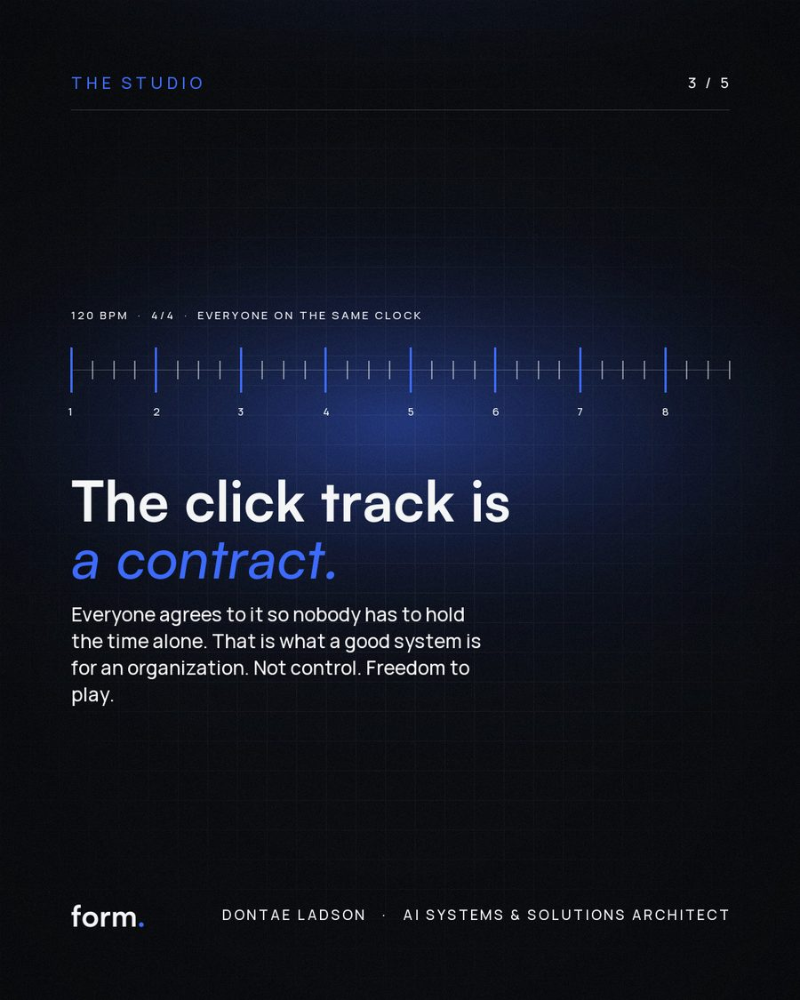
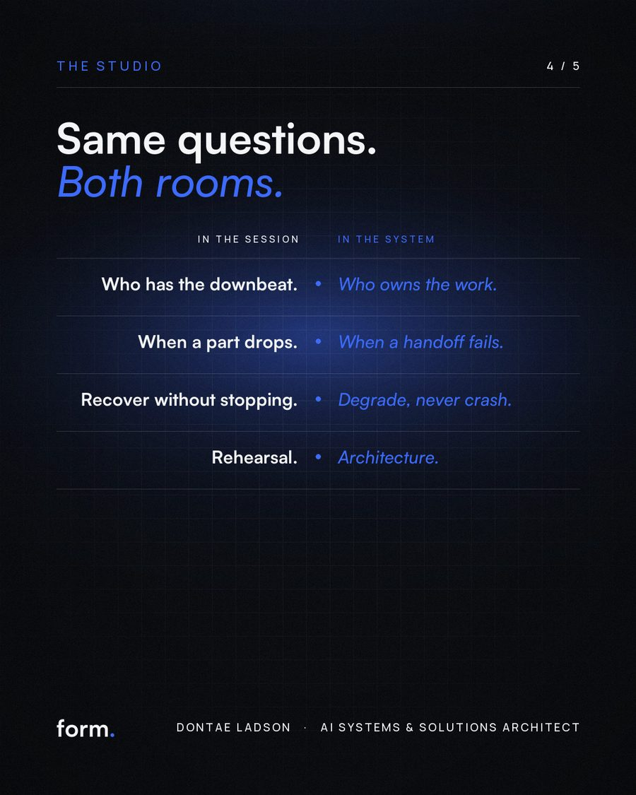
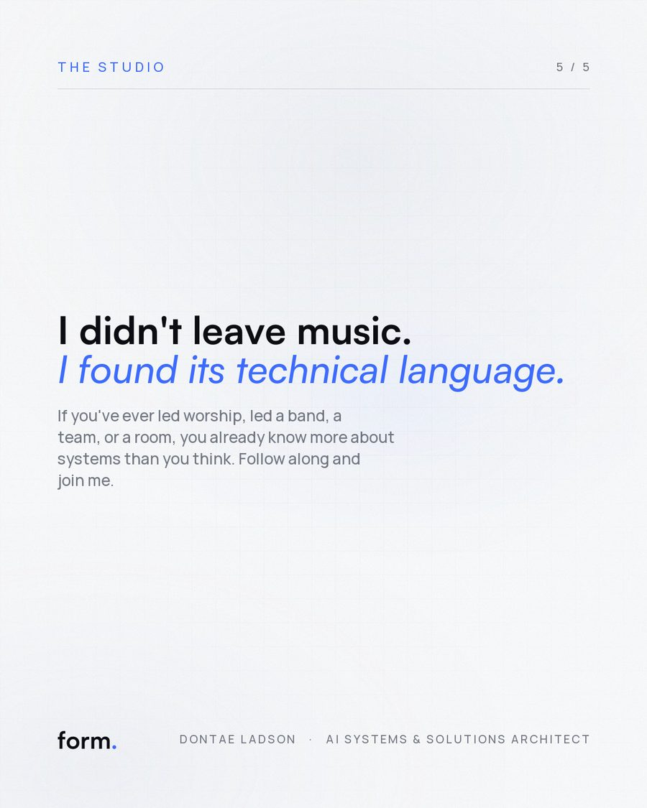
People think I left music for tech. I didn't leave anything. A session is a system. You arrange parts so a room full of people can execute one outcome, live, on time, and recover when someone comes in early. Rehearsal is architecture. The click track is a contract everyone agrees to so nobody has to hold the time alone. I didn't know that was systems thinking. I thought it was producing. Now I design workflows where people and AI employees hand work to each other, and the questions are the same ones. Who has the downbeat. What happens when a part drops. How does the room recover without stopping. If you've ever led worship, led a band, a team, or a room, you already know more about systems than you think. Looking back, I've been building pieces of this my whole career. I just found its technical language. The parallels are in the slides. Follow along and join me.
Which of the five slides is the weakest, and why?